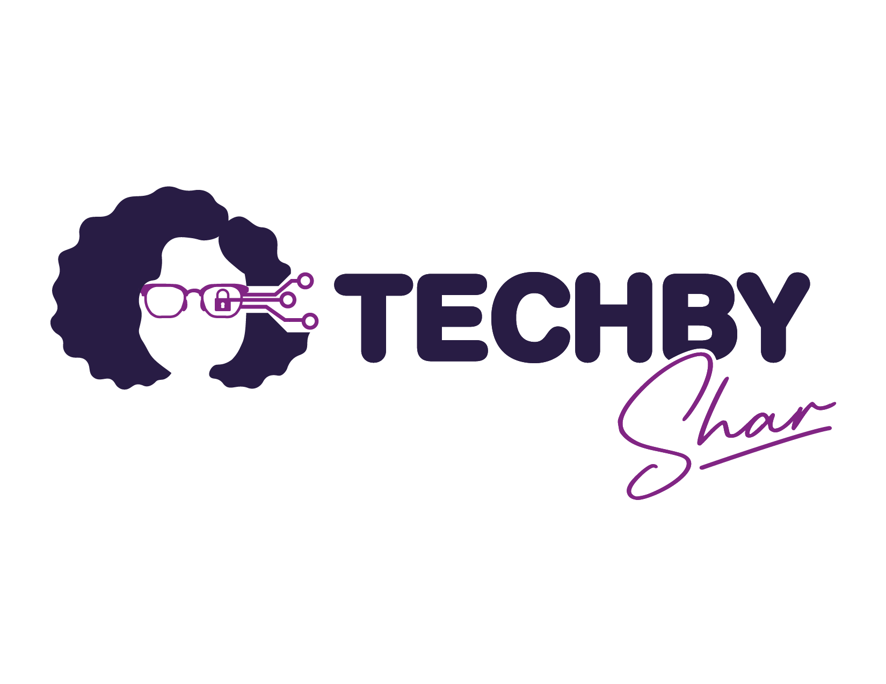

Operational resilience
Connecting service delivery, lifecycle management, risk, and continuity across distributed environments.

Cybersecurity • Leadership • Critical infrastructure
I’m Shary Llanos Antonio, a technology leader translating complex risk into practical decisions, stronger operations, and security cultures people can sustain.
My point of view
Cybersecurity is not a technology problem with a people component. It is a people system supported by technology.
Practical frameworks
I turn complex security ideas into tools leaders and teams can use in real environments, especially when operations, safety, and uncertainty collide.
Awareness. Behavior. Culture. Resilience.
A practical progression for building security habits that people understand, adopt, and sustain.
Make the call when certainty is not available.
Where it comes to life
My work sits at the intersection of service delivery, cyber resilience, critical infrastructure, and the human decisions that keep technology working.
Connecting service delivery, lifecycle management, risk, and continuity across distributed environments.
Designing security around how people actually understand, decide, and work.
Helping teams move without freezing or overreacting when the facts are incomplete and the stakes are high.
Speaking and workshops
Keynotes, panels, workshops, and interactive sessions for leaders, technologists, and security practitioners.
Featured talk
Decision making under uncertainty in energy infrastructure operations
This interactive talk places the audience inside a high stakes IT and OT decision, then introduces SAFE-R as a practical lens for making the call.
Decision making under uncertainty
Women in Technology Leadership
Digital self protection workshop
The ABC of information risk
Writing and research
Research and practical thinking on cybersecurity culture, leadership, and technology for real people.
Peer reviewed research connecting technology with practical community impact.
View publication ↗A practical guide to the ABCR approach for humanizing cybersecurity.
ABCR field guideShort, candid lessons on security, people, and the choices leaders make.
Watch on YouTube ↗Let’s build something useful
Available for speaking, workshops, collaboration, and thoughtful conversations about cybersecurity leadership.